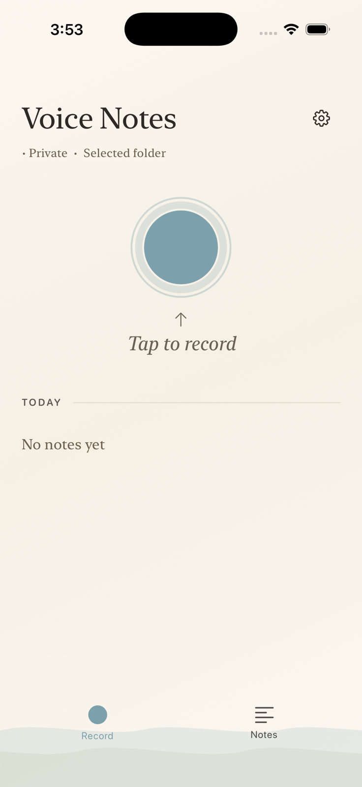

Turn conversations
into files you own.
Harbor is the private voice inbox
for your second brain—free, private,
and built for iPhone.
Harbor is the private voice inbox
for your second brain—free, private,
and built for iPhone.
Understand
Record a conversation and Harbor shapes it into a transcript, speaker sections, a summary, and action items.
Correct
Titles, summaries, speaker names, and transcript sections stay editable. Suggestions never become the source of truth without you.
Private by design
No Harbor account. Transcription and note generation run on device. Your recordings stay in the Apple Files location you choose.
Keep
Each recording gets its own folder with audio, transcript, notes, and structured metadata. Export Markdown for Obsidian—or RTF and DOCX for everywhere else.
Harbor
Capture quickly with the app, widget, or Siri. Leave with a useful note and a library you can keep.
A calm layer between talking and keeping
Voice Memos captures audio. Meeting bots organize work in their clouds. Second-brain apps store what you type. Harbor connects the three without making your recordings dependent on a subscription.

From sound to something useful
Start in Harbor, from its widget, or by asking Siri.
Get a transcript, speaker suggestions, summary, and action items.
Edit the title, names, transcript, and notes whenever context matters more than a model guess.
Browse the folder in Files or bring its Markdown into Obsidian.
Your library has an address
Harbor’s interface is useful, but it is not a gate. Audio and durable artifacts live together in a location you select in iCloud Drive or On My iPhone.
A voice inbox for the tools you already think in
Harbor doesn’t replace your knowledge system. It gives spoken ideas a durable way in.
Use the Markdown files
Import Markdown or DOCX
Import Markdown or RTF
Import Markdown
Find the promise, name, or idea that would otherwise disappear into a recording.
Search conversationsBring meetings beside the people, projects, and decisions they belong to.
Link people and projectsMove useful context into briefs, journal entries, follow-ups, and future work.
Turn decisions into workFile compatibility is based on the products’ published import and storage documentation. Harbor does not claim native integrations with these apps. References: Obsidian, Notion, Bear, and Craft.
Harbor, Plaud, and Pocket
All three can turn speech into something useful. The meaningful difference is what you carry, where the intelligence runs, and who controls the library afterward.
Capture model
Records with your iPhone microphone.
Records, then syncs into Plaud’s workflow.
Records offline, then syncs for AI summaries.
Swipe to compare Plaud and Pocket
| What matters | Harbor | Plaud | |
|---|---|---|---|
| What you need | An iPhone | A Plaud recorder and Plaud apps | A Pocket recorder and Pocket app |
| Where AI runs | On device | Cloud AI | After cloud sync |
| Where your library lives | A folder you choose in Apple Files | Plaud private cloud sync | 64GB on device plus Pocket cloud |
| Ongoing transcription plan | No plan or minute meter | Starter: 300 minutes/month. Paid higher-capacity tiers. | Free plan: unlimited transcription and summaries; 14-day cloud history. |
| Phone calls | —Does not record calls directly* | ✓Plaud Note models support calls; NotePin models do not. | ✓Supported through its contact microphone |
| Best fit | Private, file-first iPhone capture | Cloud AI workflows, hardware options, and teams | Screen-free hardware capture without a mandatory subscription |
* Harbor call workflow: On supported iPhones and in available regions, tap More (+), then Call Recording during a call. iPhone saves the recording in Notes; choose Save Audio Files to place a copy in an Apple Files folder, where Harbor can import and process it. Everyone on the call hears a recording notice. Apple call-recording guide ↗
Choose Harbor when ownership, on-device processing, and ordinary files matter most.
Based on public product pages checked July 20, 2026; plans and features can change. References: Plaud plans, Plaud devices, and Pocket.
Harbor user guide
Everything you need to capture, review, correct, export, and manage voice notes in Harbor.
On first launch, select a parent folder in iCloud Drive or On My iPhone. Harbor creates one folder inside it for each recording.
On the Record tab, tap the large record button. Tap Stop when you finish; Harbor saves audio before continuing its on-device processing.
Open Notes, select a recording, then play it or review its transcript, speakers, summary, and available location.
Edit generated text when needed, then share audio or generate Markdown, RTF, or DOCX documents.
Record is your capture home and shows today’s newest notes. Notes is the full library, including pending audio, search, and map access. Open Settings from the gear on the Record screen.
During recording, Harbor shows elapsed time, a waveform, and—when enabled—a provisional live transcript. After you stop, transcription, speaker separation, title, and summary work continue on device. Keep Harbor available while a note is still processing.
Open a note to use play or pause, the timeline, and 15-second skip controls. Choose Original or Enhanced audio when both exist. The map shows notes with saved locations; notes without location remain in the library.
Use a note’s More menu to rename it. In Transcript, edit a spoken section’s words or speaker. Name speakers from the Speakers section, and use Edit Summary to save your preferred note. Your corrections become the durable saved version.
Share original or enhanced audio from the note menu. Generate Markdown, RTF, or DOCX documents when you need portable copies. Automatic document exports can be enabled under Files & Formats in Settings.
Each recording has one folder containing audio and an authoritative recording.json file. Optional exports are regenerated from that JSON. To process compatible audio already in the selected folder, open Notes, find Audio to Process, and tap Process.
Settings reference
Troubleshooting
Privacy is architecture
Harbor runs transcription and note generation on your iPhone. You choose the Apple Files destination, and you can inspect how the app works.
Good questions
Yes. Harbor has no subscription and no transcription-minute allowance.
No. Harbor’s transcription and note generation run on device. Files go to the Apple Files location you choose, which may itself sync through iCloud if you select iCloud Drive.
Harbor does not record calls directly. On supported iPhones and in available regions, use the Phone app’s More (+) button to record a call, save the audio from Notes to Apple Files, then import and process it in Harbor. Everyone on the call hears a recording notice.
No model is perfect. Harbor keeps titles, notes, names, and transcript sections editable so you can correct what matters.
No. Harbor works as its own recorder and note library. Markdown export simply makes it a natural companion to Obsidian and other file-based tools.
Harbor for iPhone
Free. Private. Yours.